This page brings together basic information about the Balinese script and its use for the Balinese language. It aims to provide a brief, descriptive summary of the modern, printed orthography and typographic features, and to advise how to write Balinese using Unicode.
The Balinese script is used for writing the Balinese language spoken on the Indonesian islands of Java and Bali. It may also be used for Old Javanese, and liturgical Sanskrit. With some additions, it is also used to write Sasak in the neighbouring island of Lombok.
Everyday use of the script has largely been eclipsed by the Latin alphabet, but Balinese has a significant presence in traditional ceremonies and texts of the Hindu religion. It is also used for signage on roads, at the entrances to villages, and on government buildings. Traditional literature is published on a small scale, but little modern literature. Sekaha Pesantian community groups gather to read the Balinese script in a social context, commonly in song form.
ᬅᬓ᭄ᬱᬭᬩᬮᬶạk͓ṡ̂rbliaksara baliBalinese script
Balinese script is derived from Old Kawi, and ultimately from Brahmi. Historically, Balinese was written on palm leaves or inscribed in stone. Its similarity to the Javanese script in form and behaviour leads some to propose that they are typological variants of each other.
The script is an abugida. See the table to the right for a brief overview of features for the Balinese language.
Balinese text runs left to right in horizontal lines.
Words are not separated by spaces, however syllables may be separated by ZWSP, as long as they don't fall inside a stack.
Stacked consonants and conjoined pairs span word boundaries. This means that text must be wrapped at orthographic syllable boundaries, and not at word boundaries. Hyphenation occurs, using 1B60 at the line end to indicate the break.
18 consonant letters are used for pure Balinese words, supplemented by 15 more used for Sanskrit and Kawi loanwords. Some of these letters are used as honorifics, a little like capital letters in English proper nouns.
The second (or occasionally third) consonant in a syllable-initial cluster is written using 1B44 followed by one of 4 ordinary consonants or using a special vocalic combining mark.
Syllable-final consonant sounds are most commonly written using an ordinary consonant followed by 1B44. If another consonant follows, the consonant shapes are combined into a conjunct form — even if the consonants represent the end of one word and the beginning of another! Alternatively, three syllable-final consonants may be represented by one of 3 final-consonant diacritics, two of which only occur word-finally.
Consonant clusters are represented by conjunct forms that are either stacked consonants or conjoined pairs. The shape of many subjoined consonant glyphs differs from the normal shape. The shaping is produced by adding 1B44 between consonant code points.
Usually the adeg adeg is invisible, but it is rendered visibly when no other consonant follows, or occasionally in special circumstances, when it can be forced to appear using an invisible formatting character.
In principle, Balinese has no multipart vowels, however the 6 circumgraphs can also be decomposed into 2 parts. Those can involve up to 2 glyphs, and glyphs can surround the base consonant(s) on up to 3 sides.
Independent vowels are used at the beginning of a word for standalone vowel sounds. Inside a word these are written using vowel signs applied to ᬳ.
The inherent vowel is suppressed using ᭄, which is invisible in consonant clusters, but is visible elsewhere, and is used word-finally.
Balinese has vocalics, and their use is required for certain consonant-vowel combinations.
The following represents the repertoire of the Balinese language.
Click on the sounds to see where else in the document they are referred to.
Phones in a lighter colour are non-native or allophones
.
Vowel sounds
Plain vowels
Diphthongs
The sources are not very clear about Balinese vowel length. Wiktionary IPA transcriptions make no distinction in pronunciation between the long and short vowel graphemes, and this is backed up in some sources. One study describes Balinese speakers reduce long vowels to short when speaking English. Clynes@Clynes: Topics in the Phonology and Morphosyntax of Balinese,https://openresearch-repository.anu.edu.au/bitstream/1885/10744/5/Clynes%20Thesis%201996.pdf argues that some apparently long vowels are parts of separate syllables and split into different sounds under morphological changes.
On the other hand, sources including Ida Bagus Adi Sudewasb and Wikipediawl indicate that there is a difference in vowel length.
Consonant sounds
labial
dental
alveolar
post-
alveolar
palatal
velar
pharyngeal
glottal
stop
pb
td
kɡ
affricate
t͡ʃd͡ʒ
fricative
fv
sz
xɣ
ħʕ
h
nasal
m
n
ɲ
ŋ
approximant
w
l
j
trill/flap
r
Vowels
Vowel summary table
The following table summarises the main vowel to character assigments.
ⓘ represents the inherent vowel. Multipart forms are not shown here because all vowels and diphthongs are normally represented using one of the atomic characters listed here. Standalone vowels are shown in the right-hand column.
a following a consonant is not written, but is seen as an inherent part of the consonant letter, so ka is written by simply using the consonant letter.
However, the inherent vowel is pronounced ə at the end of a word and also in prefixes ma-, pa- and da-.
Vowels after consonants
Post-consonant vowels are written using 11 combining marks (vowel signs). There are 2 pre-base glyphs and 6 circumgraphs.
In principle, Balinese has no multipart vowels, however the 6 circumgraphs can also be decomposed into 2 parts. Those can involve up to 2 glyphs, and glyphs can surround the base consonant(s) on up to 3 sides.
Vowel signs
ᬓᬶ
kiU+1B13 BALINESE LETTER KA + U+1B36 BALINESE VOWEL SIGN ULU
Balinese uses the following dedicated combining marks for vowels. They are all vowel signs.
Six of the vowel signs are spacing marks, meaning that they consume horizontal space when added to a base consonant.
All vowel signs are typed and stored after the base consonant, and the glyph rendering system takes care of the positioning at display time. The glyphs used to represent vowels, whether alone or in multipart vowels, are arranged around an orthographic syllable, which may be 2 consonants, rather than just around the immediately preceding consonant. See prebase and circumgraphs.
Multipart vowels
Multipart vowels are only produced when text is decomposed; 5 of the circumgraphs split off the 1B35 glyph, to create the following pairs:
ᭀ␣ᭃ␣ᭁ␣ᬻ␣ᬽ
Pre-base vowel signs
ᬓᬾ
keU+1B13 BALINESE LETTER KA + U+1B3E BALINESE VOWEL SIGN TALING
Two vowel signs appear to the left of the base consonant letter or cluster.
ᬾ␣ᬿ
These are combining marks that are always typed and stored after the syllable-initial consonant. The rendering process places the glyph before the consonant for display or printing. Click on the following word to see the sequence of characters in storage.
ᬘᬾᬮᬾᬂ
These vowel characters are actually placed before the start of the orthographic syllable. This means that a word with a consonant cluster at the start separates the pre-base vowel from any post-base vowels by more than one consonant character (see fig_prebase).
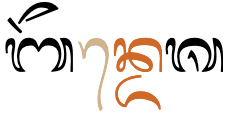
A pre-base vowel sign. Although stored after d, it appears before the nd cluster.show composition
ᬩᭂᬦ᭄ᬤᬾᬰ
Circumgraphs
ᬓᭀ
koU+1B13 BALINESE LETTER KA + U+1B40 BALINESE VOWEL SIGN TALING TEDUNG
Five vowel or vocalic sounds are represented by a vowel sign that is a single code point in memory, but when displayed it has visually separate parts that appear on different sides of the preceding consonant or cluster.
ᭀ␣ᭃ␣ᭁ␣ᬻ␣ᬼ␣ᬽ
This section includes some vowel signs described in the section vocalics.
Like pre-base glyphs, these are combining marks that are always stored after the base consonant. The rendering process places the glyphs around the base consonant, as needed. Click on 'Show composition' to see the sequence of characters in storage for the following word.
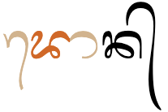
A circumgraph. The right-hand side ligates with the base character in this font.show composition
ᬤᭀᬦ᭄
Glyphs can appear on up to 3 sides of the base. Some of the glyphs merge with the base character's glyph (see context).
These circumgraphs have canonically equivalent decomposed forms (see vs_encoding).
Vowel sign placement
Show details about vowel glyph positioning.
The following list shows where vowel signs, including vocalics, are positioned around a base consonant to produce vowels, and how many instances of that pattern there are.
2 pre-base, eg. ᬓᬾ ᬓᬿ
1 post-base, eg. ᬓᬵkɑ̄
3 above-base, eg. ᬓᬶ ᬓᬷ ᬓᭂ
3 below-base, eg. ᬓᬸ ᬓᬹ ᬓᬺ
2 pre+post-base, eg. ᬓᭀ ᬓᭁ
1 below+post-base, eg. ᬓᬻ
1 below+above-base, eg. ᬓᬼ
1 below+above+post-base, eg. ᬓᬽ
1 above+post-base, eg. ᬓᭃkə̄
At maximum, vowel components can occur concurrently on 3 sides of the base.
Vowel length
The sources are not very clear about whether Balinese vowels vary in length during pronunciation (see phonemesV). The Balinese vowel sign repertoire does, however, contain glyphs that distinguish between short and long vowels (see basicV).
Nasalisation
If Balinese nasalises any vowel sounds, it is not explicitly marked in the orthography.
Standalone vowels
Balinese has 2 ways to represent standalone vowels: using independent vowels, or using vowel signs.
Independent vowels
ᬇ␣ᬈ␣ᬉ␣ᬊ␣ᬏ␣ᬑ␣ᬅ␣ᬆ␣ ␣ᬐ␣ᬒ
At the beginning of a word, most standalone vowels are represented using one of the 10 independent vowel characters. The set includes a character to represent the inherent vowel sound.
ᬉᬱᬥ
ᬆᬤᬶ
The vowel signs for ə (1B42) and əː (1B43) don't have an independent form, and have to be used after ᬳ at the beginning of a word, ie. 1B33 1B42 and 1B33 1B43, respectively, eg.
ᬳᭂᬫ᭄ᬧᬢ᭄
In Sasak, independent vowel ᬅ can be followed by an explicit 1B44 in word- or syllable-final position, where it indicates the glottal stop. Other consonants can also be subjoined to it. eg. ᬳᬫᬅ᭄hmạ͓amaʔ
Vowel signs
ᬳᬶ␣ᬳᬷ␣ᬳᬸ␣ᬳᬹ␣ᬳᬾ␣ᬳᭀ␣ᬳᭂ␣ᬳᭃ␣ᬳᬵ␣ ␣ᬳᬿ␣ᬳᭁ
Typically, a standalone vowel is represented by a vowel sign attached to ᬳ, which acts as a carrier, eg.
ᬤᬳᬾᬭᬄ
Without a vowel sign the letter ᬳ may represent a, eg.
ᬳᬮᬲ᭄
However, it may be unclear from the written text whether ᬳ represents the sound h or is used as a carrier for a vowel, eg. compare
ᬳᬶᬕᬳᬶᬕᭂᬮ᭄
Vowel absence
᭄
Balinese uses ᭄ (the Balinese equivalent of the Sanskrit virama) to kill the inherent vowel after a consonant.
The adeg adeg is always visible at the end of a word that ends in a consonant and isn't followed by another consonant, eg.
ᬧᬦᬓ᭄
It is usually still present in the underlying code point sequence, but hidden (with occasional exceptions) when the consonant is part of a consonant cluster (see clusters).
Sometimes it is used to clarify the distinction between a word-final consonant and a medial consonant by preventing the stacking of the final consonant in the previous word and the first consonant in the next, eg. compare:
ᬧᬓ᭄ᬭᬫᬦ᭄
ᬧᬓ᭄ᬭᬫᬦ᭄
To create this effect, add 200C or 200B immediately after the adeg adeg. (Click on the Mr Raman example above to see the sequence of code points used.)
Vowel sounds to characters
This section maps Balinese vowel sounds to common graphemes in the Balinese orthography. Click on a grapheme to find other mentions on this page (links appear at the bottom of the page). Click on the character name to see examples and for detailed descriptions of the character(s) shown.
Dependent vowels are shown to the left, and independent vowels are shown on the right. Independent vowels are usually only used in word-initial position. Word-internal standalone vowels (and word-initial in the case of ə and əː) use the vowel sign over a silent 1B33. Those combinations are not shown here. Vowel signs that decompose are shown only in precomposed form.
Sounds listed as 'infrequent' are allophones, or sounds used for foreign words, Sanskrit, etc.
Plain vowels
Dependent vowels
Independent vowels
i
1B36 ᬤᬶᬦ
1B07 ᬇᬦ᭄ᬤ᭄ᬭᬬ
iː
1B37 ᬤᬷᬦ
1B08
u
1B38 ᬧᬸᬧᬸ
1B09 ᬉᬱᬥ
uː
1B39 ᬲᬹᬢ
1B0A
e
1B3E ᬘᬾᬮᬾᬂ
1B0F ᬏᬓ
o
1B40 ᬢᭀᬕᭀᬕ᭄
1B11 ᬑᬱᬥᬶ
ə
Inherent vowel at the end of a word and also in prefixes ma-, pa- and da-.
1B42 ᬘᭂᬦᬶᬓ᭄
əː
1B43
ɛ
1B3E ᬘᬾᬮᬾᬂ
1B0F
ɔ
1B40
1B11
a
Inherent vowel ᬅᬯᬢᬵᬭ
1B05 ᬅᬓ᭄ᬱᬭ
ɑː
1B35 ᬕᬵᬦ
1B06 ᬆᬃᬬ
Diphthongs and other combinations
Dependent vowels
Independent vowels
aːj
1B3F ᬤᬿᬢ᭄ᬬ
1B10 ᬐᬃᬱᬡ᭄ᬬ
aːw
1B41
1B12 ᬒᬁᬲ᭄ᬯᬲ᭄ᬢ᭄ᬬᬲ᭄ᬢᬸ
Vocalics
Dependent vowels
Independent vowels
rə
1B3A ᬓᬺᬰ᭄ᬡ
1B0B ᬋᬤᬶᬢᬾ
rəː
1B3B
1B0C
lə
1B3C
1B0D ᬚᭂᬍᬫ
ləː
1B3D
1B0E
Vocalics
ᬋ␣ᬌ␣ᬍ␣ᬎ␣ᬺ␣ᬻ␣ᬼ␣ᬽ
At the beginning of a syllable the vocalic is treated as a consonant, eg.
ᬓᭂᬋᬂ
ᬢᬍᬃ
As a second component in a consonant cluster, the vocalic ra repa has a postfixed form and a subjoined form.
When the sound occurs after a syllable-initial consonant, ie. when it occurs as a medial consonant in the same syllable, use the vowel sign 1B3A, which produces the subjoined form. The sequence of characters here is simply Cᬺ, eg.
ᬓᬺᬰ᭄ᬡ
When the sound occurs after a syllable-final consonant, ie. as the start of a new syllable, use the conjoined (postfix) form ᭄ᬋ. The sequence of Unicode characters is C᭄ᬋ, eg.
ᬧᬓ᭄ᬋᬋᬄ
Consonants
Consonant summary table
The following table summarises the main consonant to character assigments.
Consonants used for native Balinese words are shown in the left-hand column. On the right are consonants used for words from Kawi, Sanskrit, and other languages.
Balinese uses 18 basic consonants known as aksara wreṣāstra (ᬅᬓ᭄ᬱᬭᬯᬺᬱᬵᬲ᭄ᬢ᭄ᬭ).
ᬧ␣ᬩ␣ᬢ␣ᬤ␣ᬓ␣ᬕ␣ᬘ␣ᬚ␣ᬲ␣ᬳ␣ᬫ␣ᬦ␣ᬗ␣ᬜ␣ᬯ␣ᬭ␣ᬮ␣ᬬ
The characters listed here (and in the following sections) also have subjoined/conjoined shapes, which may differ significantly from those shown here. See clusters for a list of glyph shapes.
ᬳ at the beginning of a word or after a preceding vowel is mostly used as a support for a vowel sign (see standalone), and is not pronounced or transcribed. Word finally with a suffix vowel, however, it is transcribed.loc
Additional/honorific consonants
These are called aksara sualalita (ᬅᬓ᭄ᬱᬭᬰ᭄ᬯᬮᬮᬶᬢ).
Many of the additional consonants are commonly used in words originating from Arabic and Dutch, and are most common in north Bali and Lombok. When used in pure Balinese words, they are similar to capital letters and are used to create an honorific effect. There are similar characters in Javanese.
They don't add any consonant sounds to the Balinese repertoire. In words originating from Sanskrit, Old Javanese, or Old Balinese, they represent aspirated or other consonants.loc
Additional consonants used for Sanskrit words.
ᬞ␣ᬟ␣ᬠ␣ᬔ␣᭄ᬙ␣ᬛ
Additional consonants used for words from Kawi.
ᬨ␣ᬪ␣ᬝ␣ᬣ␣ᬥ␣ᬖ␣ᬰ␣ᬱ␣ᬡ
The following are particularly noteworthy points about certain characters listed above. More details for each character can be revealed by clicking on the lists above. See also the sound to character mapping table.
Two consonants, ᬔ and ᬙ, are considered very rare, and one other, ᬛ, seems to be known from only one word:
ᬦᬶᬃᬛᬭ
(It is possible that an original ai may have been lost in Balinese, to be replaced by the glyph for jʰa.)
A number of the Sanskrit or Kawi consonants are rather poorly attested. The letter ᬙ is only found in non-initial position following ᬘ, ie. ᬘ᭄ᬙc͓CMost of the series that originally represented retroflex sounds is often omitted in books about the script.
Rerekan
The combining mark ᬴ is used, as is a similar sign in Javanese, to extend the character repertoire for foreign sounds. However, according to Perdanaabp,13 the use of this sign is specific to Lombok texts, and even there its use is sporadic and inconsistent. While the sign can theoretically be used in Balinese settings, common Balinese users would not be familiar with the sign and normally render foreign consonants using the nearest sounding native sound without any additional markings.
The first 7 of the 8 combinations listed below are attested in Library of Congress transliterations and in earlier Sasak orthography. The 8th, ᬤ᬴ could be used for one-to-one transliteration for Javanese ɖ.
ᬧ᬴␣ᬯ᬴␣ᬚ᬴␣ᬓ᬴␣ᬕ᬴␣ᬳ᬴␣ᬗ᬴␣ᬤ᬴
In rendering, the dots of these letters appear above the top character, which can cause some ambiguity in reading. The following are all visually indistinguishable:
ᬓ᬴᭄ᬚkˑ͓ʤxjaᬓ᭄ᬚ᬴k͓ʤˑkzaᬓ᬴᭄ᬚ᬴kˑ͓ʤˑxza
In practice these combinations are probably rather rare.
Sasak
In recent times, Sasak users abandoned the use of the Javanese-influenced rerekan in favour of a series of modified letters (see above), making use, in addition, of some of unused Kawi letters for the Arabic sounds. In place of ᬓ᬴x and ᬕ᬴ɣ, for instance, the new fusion of KA and HA,ᭆ and the Kawi letter ᬖ are used.
(Does the fact that these relate to aspirated or retroflex forms originally affect the pronunciation?)
ᭅ␣ᭆ␣ᭇ␣ᭈ␣ᭉ␣ᭊ␣ᭋ
Onsets
᭄ᬯ␣᭄ᬭ␣ᬺ␣᭄ᬮ␣᭄ᬬ
The consonants ya, ra, la and wa regularly appear immediately after the initial consonant in a syllable. Unlike Javanese, Balinese has no special characters for these medial sounds (other than the vocalics mentioned earlier); they are just written using the normal approach for dealing with consonant clusters. These shapes are called pangangge aksara (ᬧᬗ᭢ᬗ᭄ᬕᬅᬓ᭄ᬱᬭ).
ᬓ᭄ᬭᬫ
Multiple medials can occur: r or l can be followed by w or y, eg.
ᬩ᭄ᬭ᭄ᬬᬕ᭄
In addition, the vocalics can produce consonant sounds (tied to a specific vowel) in medial position, eg.
ᬓᬺᬰ᭄ᬡ
See clusters for more details on shaping of glyphs.
Finals
Normally, syllable and word-final consonant sounds with no following consonant are represented using an ordinary consonant character followed by ᭄. For example,
ᬓᬵᬤᭂᬧ᭄
ᬓᬧᬮ᭄
If the consonant is followed by another consonant, either in the middle or at the end of a word, the adeg adeg code point remains, but becomes invisible as the consonant shapes combine vertically or horizontally.
Combining marks
However, there is also a set of combining marks for syllable-final consonants that don't need to be followed by the adeg adeg.
ᬄ␣ᬂ␣ᬃ
1B02 and 1B04 only appear at the end of a word, eg.
ᬓᭂᬋᬂ
ᬫᬗᬄ
unless the word involves repetition, eg.
ᬘᬾᬂᬘᬾᬂ
1B03 can appear at the end of any syllable.
ᬓᬃᬡ
A syllable-final diacritic may appear above a stack. It is typed and stored after the other components in the stack, eg.
ᬩᬗ᭄ᬓᬸᬂ
When the syllable has a spacing vowel sign, any above-base final-consonant mark appears over the base character, rather than over the vowel sign. This is positioned by the font; the final consonant mark is still typed and stored after the other syllable components, eg.
ᬕᭂᬤᭀᬂ
See also finals for a dedicated final consonant mark followed by a regular consonant.
Word boundaries. Conjuncts span word boundaries. Because there are no spaces between words, a cluster is created when a consonant with no following vowel at the end of a word is followed by a consonant at the beginning of the next word.
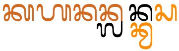
In the sequence of words kahanan lan kwasa the initial consonant of each word is subjoined below the final consonant of the preceding word.
Stacks and conjoined sequences are not normally split at line ends (see word and linebreak for the ramifications of this).
Stacked and conjoined consonant clusters are referred to as conjuncts.
In Unicode, the stacking and conjoining behaviour is achieved by adding 1B44 between the consonants. The font hides the glyph automatically when a conjunct is formed.
In some cases, however, the adeg adeg remains visible (see adegadeg).
Stacking
To represent consonant sounds without intervening vowels, the non-initial consonant letter is typically drawn below the initial consonant letter, and with a slightly different shape. These subjoined forms are called gantungan (ᬕᬦ᭄ᬢᬸᬗᬦ᭄).
Many of the subjoined forms are just slightly smaller versions of the original, but several have very different shapes altogether, most of which ligate with the cluster initial consonant by joining strokes.
There can be up to 3 consonants combined in this way, but the third consonant must be one of ya, ra, la or wa.
The lists below show consonants in their normal and subjoined forms
In conjoined clusters, the consonant glyphs remain side by side, but the non-initial consonant is reduced on the left side. These conjoined forms are called gempelan (ᬕᬾᬫ᭄ᬧᬾᬮᬦ᭄).
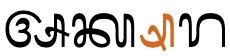
The left side of ᬰ is reduced when conjoined.show composition
ᬅᬓ᭄ᬱᬭ
This list shows consonants in their normal and conjoined forms
native letters
ᬧ᭄ᬧ␣ᬲ᭄ᬲ␣ᬋ᭄ᬋ
Kawi letters
ᬨ᭄ᬨ␣ᬱ᭄ᬱ
The conjoined ᬲ is unusual in that it also adds a stroke below the initial consonant (see fig_conjoined_sa). This helps distinguish it from the conjoined p.
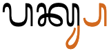
ᬲ when conjoined not only loses some of its left side but also adds a glyph below the initial consonant.show composition
ᬧᬓ᭄ᬲ
Visible adeg adeg
Because there is no word separator, consonants at the end of one word and beginning of the following word are normally stacked, too.
In some cases this leads to ambiguity about whether this is one or two words. If you really want to make clear which is which, you can use an explicit adeg-adeg, eg. compare
ᬧᬓ᭄ᬭᬫᬦ᭄ᬧᬓ᭄ᬭᬫᬦ᭄
The Unicode Standard recommends the use of 200C (ZWNJ) after the adeg-adeg in order to prevent conjunct formation. However, not many people understand the function of ZWNJ or can access it easily from the keypad. It also doesn't introduce line-break opportunities. A better solution may be to use 200B (ZWSP). This character is needed anyway on most systems in order to allow line-breaking, and it appears to work equally well for this.
A somewhat ambiguous situation arises where conventions prevent certain combinations stacking. For example, the name of the village tamblung should not stack the mbl, but should look as follows.
ᬢᬫ᭄ᬩ᭄ᬮᬂ
The Unicode Standard advises to use a zero-width non-joiner after ma, to achieve this.
Observation: Note that this may also be achieved by intelligence in the font, as was actually the case when I generated this example (click on it to see). It's not clear to me what is the preferred approach: put ZWNJ in only when the font doesn't do what you want, or use it always. The latter may lead to more consistent content where different fonts are applied to the text (eg. after cut and paste). In theory, this shouldn't affect searching and sorting, although some applications may not ignore the ZWNJ as they should.
Dedicated final marks
Balinese represents some final consonants using dedicated marks (see finals). Such final marks are followed by ordinary consonant shapes in consonant clusters. There is no visual indication of missing vowel sounds other than the use of the mark itself.
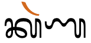
A cluster involving a dedicated final mark doesn't form a conjunct.show composition
ᬓᬃᬡ
Consonant sounds to characters
This section maps Balinese consonant sounds to common graphemes in the Balinese orthography.
The left column contains native Balinese letters. The right column contains letters borrowed from Sanskrit or Kawi, or extended with rerekan.
Click on a grapheme to find other mentions on this page (links appear at the bottom of the page). Click on the character name to see examples and for detailed descriptions of the character(s) shown. Sounds listed as 'infrequent' are allophones, or sounds used for foreign words, Sanskrit, etc.
Two combining marks have a specialist usage related to (usually religious) Sanskrit words.
ᬀ␣ᬁ
ᬀ when combined with certain syllables becomes part of the Aksara Modre, or holy letters, which are used to write words in Sanskrit, usually part of prayers. This character only appears in Sanskrit texts, eg. ᬰᬶᬤ᭄ᬥᬀsiddham
ᬁ appears only in holy letters, eg. ᬫᬁmŋ̽ (Mang)When combined with independent vowel ạʷ it becomes a special symbol called omkara and is pronounced m. In this form it is used to represent god, eg. ᬒᬁᬱᬦ᭄ᬢᬶ᭞ᬱᬦ᭄ᬢᬶ᭞ᬱᬦ᭄ᬢᬶ᭞ᬒᬁ
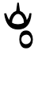 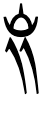 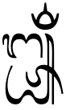.
Modre symbols that include ulu candra.
Musical marks and symbols
The other symbols in the Balinese block are all musical symbols, and are not described here.
᭡␣᭢␣᭣␣᭤␣᭥␣᭦␣᭧␣᭨␣᭩␣᭪␣᭴␣᭵␣᭶␣᭷␣᭸␣᭹␣᭺␣᭻␣᭼
There is also a set of musical diacritical marks, which are not described here.
᭫␣᭬␣᭭␣᭮␣᭯␣᭰␣᭱␣᭲␣᭳
For an in-depth look at musical symbols in Balinese see Perdana.
Encoding choices
Balinese is a script where different sequences of Unicode characters may produce the same visual result. Here we look at those related to vowels.
Encoding vowel signs
Five of the circumgraphs can be written as a single character, or as two characters, the second being ᬵ [U+1B35 BALINESE VOWEL SIGN TEDUNG] in all cases.
Atomic
Decomposed
ᭀ
1B3E 1B35
ᭃ
1B42 1B35
ᭁ
1B3F 1B35
ᬻ
1B3A 1B35
ᬽ
1B3C 1B35
The single code point per vowel sign is preferred, however the parts are separated in Unicode Normalisation Form D (NFD), and recomposed in Unicode Normalisation Form C (NFC), so both approaches are canonically equivalent.
Whichever approach is used, the vowel signs must be typed and stored after the consonant characters they surround, and in left to right order.
Encoding independent vowels
Three of the independent vowels can be written as a single character, or as two. Again, this always involves ᬵ.
Atomic
Decomposed
ᬊ
1B09 1B35
ᬒ
1B11 1B35
ᬆ
1B05 1B35
The precomposed characters decompose in NFD, and reform again in NFC. It is generally recommended to use the precomposed character.
Combining mark order
The following indicates the expected ordering of Unicode characters within a Burmese combining character sequence. The labels are those used for the Unicode Indic Syllabic Categories. Follow the links to see what characters are represented by a given label.
The first type is a base plus Virama. This is the non-final part of a consonant cluster or a consonant with a killed vowel, and consists of just the base and the virama.
The general CCS type uses the following preferred ordering after a base.
Ordering characters as shown above avoids potential ambiguities and maximises the likelihood of success when rendering the text.
Numbers
There is a set of Balinese digits, and they are used in the same way as ASCII digits in Latin text.
᭑␣᭒␣᭓␣᭔␣᭕␣᭖␣᭗␣᭘␣᭙␣᭐
However, because many of the digit symbols are indistinguishable from other Balinese letters, numbers are typically surrounded by ᭞, so that they are clearly distinguished, eg. ᬩᬮᬶ᭞᭓᭞ᬚᬸᬮᬶ᭞᭑᭙᭘᭒᭟
Text direction
Balinese text is written horizontally, left to right.
Balinese text relies on OpenType rules to correctly position glyphs and shape them according to the surrounding text.
One major area where this applies is in the use of conjunct forms for consonant clusters. See the relevant sections for lists of stacked and conjoined shapes.
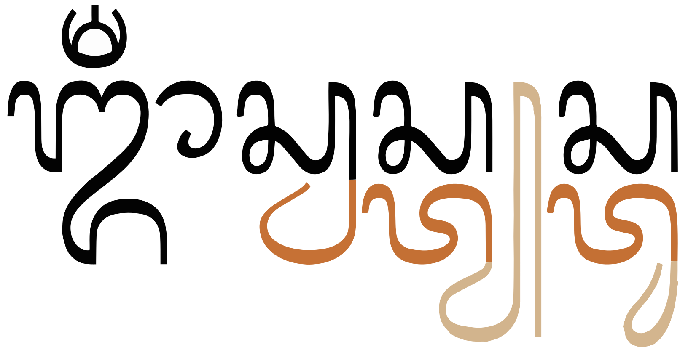
Stacked conjunct forms in the word om swastiastu.show composition
ᬒᬁᬲ᭄ᬯᬲ᭄ᬢ᭄ᬬᬲ᭄ᬢᬸ
The following is a selection of other examples of contextual shaping and positioning.
After a stacked consonant, the vowel signs that would normally appear below a base are moved to the side, and the shape is modified.
Composition
Example
ᬓ᭄ᬭᬸ
1B44 1B2D 1B38
ᬓ᭄ᬭᬸᬦ
ᬓ᭄ᬬᬹ
1B44 1B2C 1B39
ᬵ and the right side of ᭁ combine with several of the consonants. The table below shows 2 examples.
Composition
Example
ᬳᬵ
ᬳᬵ
ᬭᬵ
ᬭᬵ
ᬢᬭᬵ
When a vowel sign and a syllable-final consonant mark appear over the same base, they are typically drawn side by side. Combinations such as rerekan and above-base vowels are typically stacked.§
Composition
Example
ᬓᬷᬃ
ᬷᬃ
ᬢᬷᬃᬢ
ᬰᬶᬁ
ᬶᬁ
Typographic units
Word boundaries
Words are not separated by spaces, and in fact some word boundaries occur between stacked consonants. This means that segmentation for line-breaking, etc. uses orthographic syllables as a unit (see graphemes).
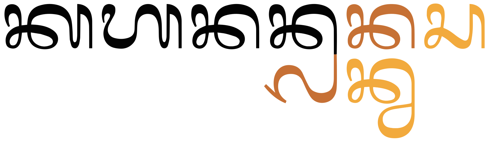
In this sequence of three words kahanan + lan + kwasa, the initial letter of both the 2nd and 3rd words are subjoined below the last letter of the previous word.details
ᬓᬳᬦᬦ᭄pŋnkahanan ᬮᬦ᭄pŋnlan ᬓ᭄ᬯᬲdikkwasa
Graphemes
Grapheme clusters alone are not sufficient to represent typographic units in Balinese. Stacks and conjoined sequences are very common and must not be split apart by edit operations that visually change the text (such as letter-spacing, first-letter highlighting, and line breaking). For those operations one needs to segment the text using orthographic syllables, which string grapheme clusters together with ᭄, which has an Indic Syllabic Category of Virama.
The adeg-adeg is rendered visibly if it is not part of a consonant cluster, for example at the end of a word followed by a space.
Balinese doesn't use word boundaries for text segmentation, relying instead on grapheme boundaries because consonant clusters that span word boundaries are combined into stacks or conjoined forms.
Grapheme clusters
Base Combining_mark* Joiner?
Combining marks may include zero or more of the following types of character:
Any of the above may occur after a consonant base. Independent vowel bases usually only have final consonant marks.
The following examples show a variety of grapheme clusters:
Click on the text version of these words to see more detail about the composition.
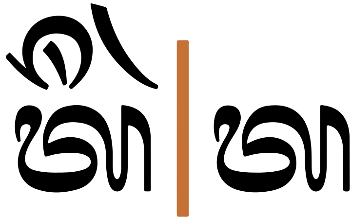
ᬢᬷᬃᬢ
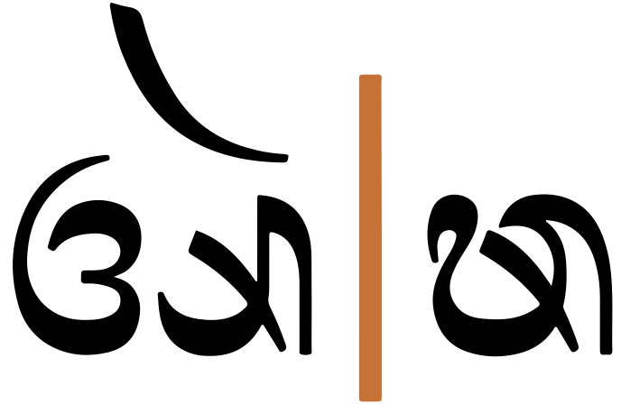
ᬅᬃᬣ
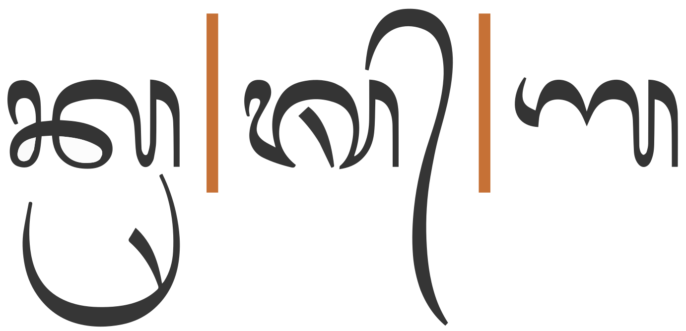
ᬓᬺᬰ᭄ᬡ
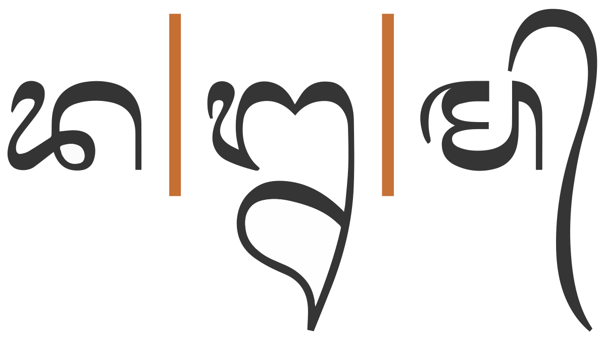
ᬤᬍᬫ᭄
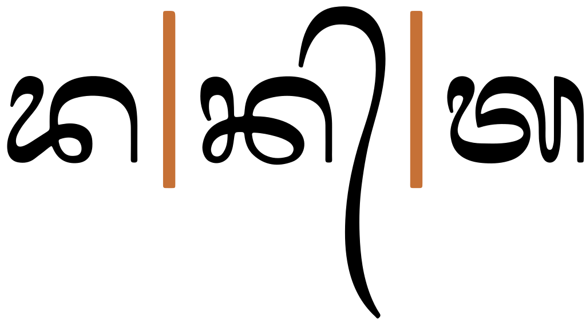
ᬤᬦ᭄ᬢ
Note how grapheme clusters break up the conjuncts. This is not usually desirable (see orthographicS just below).
Larger typographic units
(Consonant Rerekan? Adeg_adeg)* Grapheme_cluster
Balinese commonly stacks or conjoins glyphs, to form conjuncts. The conjuncts represent consonant clusters, which can arise (a) where one phonetic syllable ends in a consonant letter and the following syllable begins with a consonant, or (b) when most medial consonants are written, since Balinese uses conjunct forms for sequences such as Cr-, Cy-, Cw-, Cry-, etc. The cluster of consonants that make up the conjunct are all encoded with adeg adeg between them (see clusters).
Balinese is unusual in that these conjuncts occur across word boundaries, so the word-final consonant of the first word may be stacked above the word-initial consonant of the second. See fig_kahananlankwasa2 for an example.
Grapheme clusters terminate after a sequence of marks containing an adeg adeg, but editorial operations that change the visual appearance of the text, such as letter-spacing, first-letter highlighting, line-breaking, and justification, should never split conjunct forms apart. For this reason, an alternative way of segmenting graphemes is needed. This may not apply, however, for some other operations such as cursor movement or backwards delete.
Where conjuncts appear, a typographic unit contains multiple grapheme clusters. The non-final grapheme clusters all end with ᭄, and the final grapheme cluster begins with a consonant.
The following are examples.
Click on the text version of these words to see more detail about the composition.
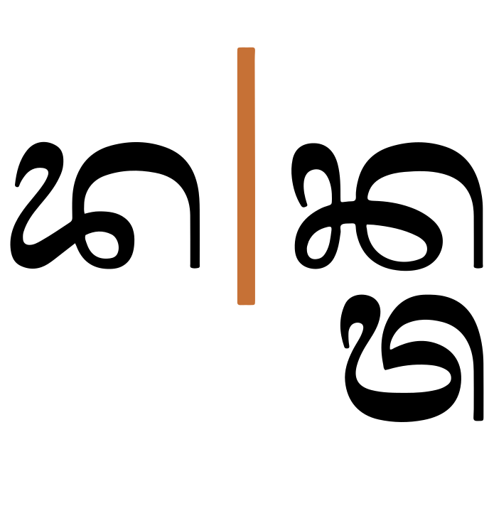
ᬤᬦ᭄ᬢ
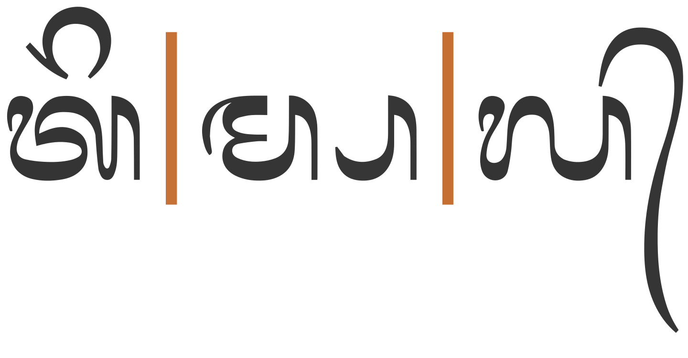
ᬢᬶᬫ᭄ᬧᬮ᭄
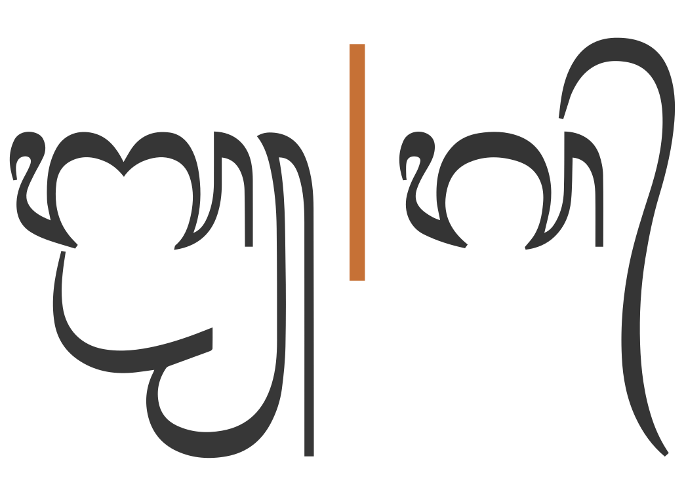
ᬩ᭄ᬭ᭄ᬬᬕ᭄
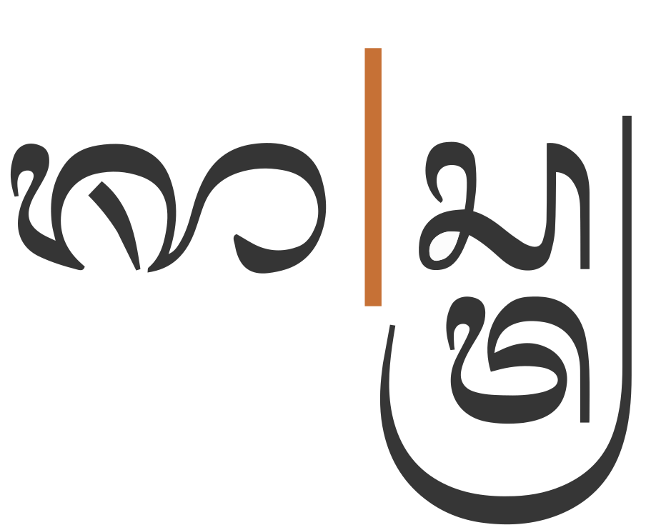
ᬰᬵᬲ᭄ᬢ᭄ᬭ
Note that one of the characteristic features of the Indic category of Virama is that the adeg adeg is visible when not followed by a consonant, but invisible when a consonant does follow (creating a stack). This means that the adeg adeg sometimes participates in a simple grapheme cluster, but when followed by a consonant it becomes the 'glue' that creates an orthographic syllable.
On the infrequent occasions when an adeg adeg needs to be visible even though it is followed by another base, an invisible character must be added to prevent it joining with the following base. A zero-width space can achieve that.
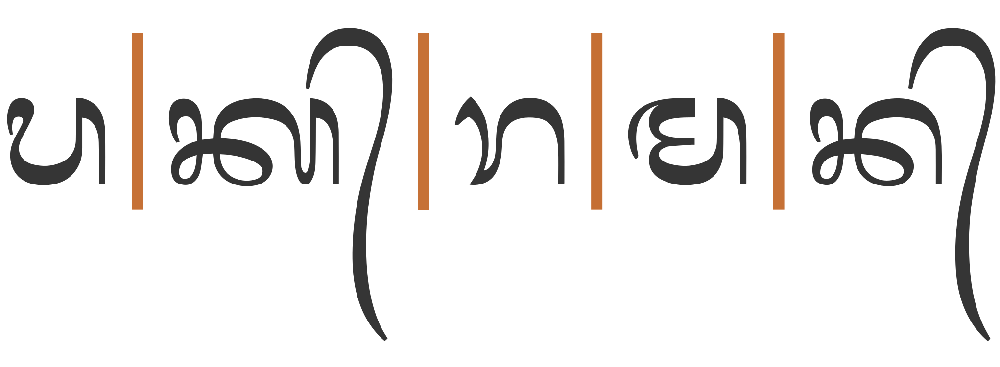
ᬧᬓ᭄ᬭᬫᬦ᭄
Browser behaviour
Test in your browser.The words test units that equate to grapheme clusters only, and others that include conjuncts. First, the text is displayed in a contenteditable paragraph, then in a textarea. Results are reported for Gecko (Firefox), Blink (Chrome), and WebKit (Safari) on a Mac.
ᬢᬷᬃᬢᬓᬺᬰ᭄ᬡᬧᬾᬜ᭄ᬚᭀᬃᬢᬶᬫ᭄ᬧᬮ᭄ᬩ᭄ᬭ᭄ᬬᬕ᭄
Cursor movement.Move the cursor through the text.
Gecko steps through the whole text using grapheme clusters. It takes 2 or more steps (depending on the number of GCs) to get through the stacks, one grapheme cluster at a time. Blink and WebKit step through all words using the orthographic syllables described here (ie. they step over a stack and all associated combining characters in one jump).
Selection.Place the cursor next to a character and hold down shift while pressing an arrow key.
The behaviour is the same as for cursor movement.
Deletion. Forward deletion works in the same way as cursor movement. The backspace key deletes code point by code point, except for WebKit, which deletes one grapheme cluster at a time.
Line-break.See this test. The CSS sets the value of the line-break property to anywhere. Change the size of the box to slowly move the line break point.
Gecko appears to segment on orthographic syllable, per the description here, except for one case where the complex stack is split. WebKit and Blink appear to sometimes wrap inside stacks and other times not. It's not obvious why, but both segment in the same way.
Punctuation & inline features
Phrase & section boundaries
᭞␣᭝␣᭟␣᭚␣᭛␣᭜
Balinese has its own punctuation marks.
phrase
᭞
᭝
sentence
᭟
section
᭚
᭛
᭟᭜᭟
᭛᭜᭛
᭝ is used as a colon, and ᭞ and ᭟ are used as comma and full stop respectively.
Both ᭚ and ᭛ are used to begin a section in text. At the end of a section, pasalinan᭟᭜᭟ and carik agung᭛᭜᭛ may be used (depending on what sign began the section).
Line & paragraph layout
Line breaking & hyphenation
Because there are no spaces between words, and because the end of one word and the beginning of another often form conjuncts (see fig_kahananlankwasa2), Balinese doesn't wrap at word boundaries. See graphemes for a description of the typographic units that are used for line break opportunities.
Unfortunately, modern browsers are often unable to detect appropriate break points for Balinese, so in the sample text at the beginning of this page 200B is used at places where the line could be broken. Otherwise, the line would continue, unbroken off the right side of the page.
Pameneng
᭠
In lontar texts where a word must be broken at the end of a line (always after a full syllable), the sign ᭠ is inserted. This sign is not used as a word-joining hyphen; it is used only in linebreaking.
Observation: The images appear to show a gap before the pameneng.
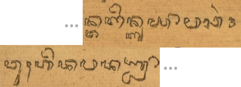A compacted image of a lontar showing a pameneng at the end of a line, with the beginning of the following line below. (Click to see more.)
In online use, an application would need to insert the pameneng, rather than the content author. As line-length is changed by stretching a window, or as content is added earlier in the same paragraph, the location of the word relative to the line edge will change. The insertion of pameneng is only appropriate at those instants when the appropriate sequence of characters appears at the line end.
For an application to use this correctly, it would need to know where the word boundaries are in the text, and then put this character at the end of the line only when a multisyllabic word is broken. This would require a dictionary to be applied to the text, since it would not be appropriate to insert the pameneng at the boundary of 2 words.
Observation: Aditya Bayu Perdana has found instances in lontar where ᬄ is moved to the beginning of a line, alone, while a pameneng appears at the end of the previous line. If this is not just a scribal inconsistency (eg. it's not clear why you wouldn't put the bisah at the end of the line if there's space for a pameneng), it may indicate that this letter should not be a combining mark in Unicode; however, the usage needs to be verified first. See pictures.
Line-edge rules
As in almost all writing systems, certain punctuation characters should not appear at the end or the start of a line. The Unicode line-break properties help applications decide whether a character should appear at the start or end of a line.
The following list gives examples of typical behaviours for characters used in contemporary Balinese. Context may affect the behaviour of some of these and other characters.
Click on the Balinese characters to show what they are.
᭚ ᭛ ᭝ ᭞ ᭟ ᭠ should not begin a new line
Text alignment & justification
According to Sudewa, full justification is not a feature of Balinese text in traditional palm-leaf manuscripts, and only left, or occasionally centred or right alignment is relevant.
Baselines, line height, etc.
Balinese uses the so-called 'alphabetic' baseline, which is the same as for Latin and many other scripts.
fig_baselines shows glyphs from the Noto Serif fonts. The basic height of Balinese letters is the same as the Latin x-height, however extenders and combining marks, extend well beyond the Latin ascenders and descenders, creating a need for larger line heights.
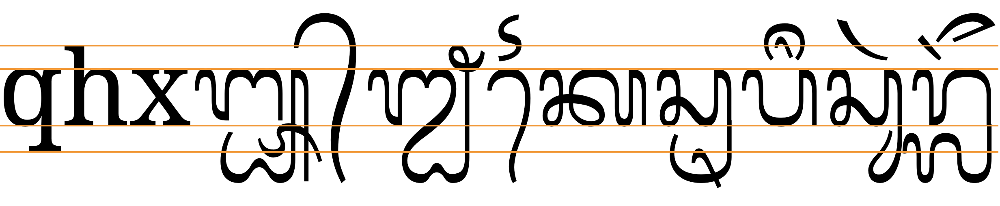
Font metrics for Latin text in the Noto Serif font compared with Balinese glyphs in the Noto Serif Balinese font.
Page & book layout
General page layout & progression
Traditionally, Balinese was written on thin, landscape palm-leaf manuscripts, called lontar.